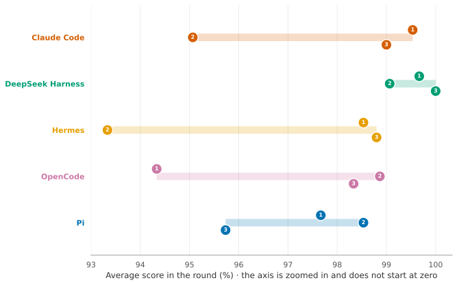
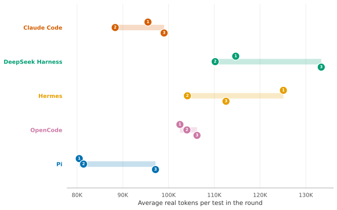

qwen3.8-flash-next: medium reasoning effort
Claude Code, DeepSeek Harness, Hermes, OpenCode and Pi were each given the same 15 tasks, three times each, with the model run at medium reasoning effort.
Each task is graded by automatic checks and given a score from 0 to 100% for how much of it is right. The tasks are really pass or fail, because a claim with a wrong total or an accounting file edited wrongly can't be relied on, so only 100% counts as a pass. Partial credit is there to show progress: a later version of a harness may still fail a task but get closer to passing it.
On this page: Headline · Correctness · Cost · Tokens · Round by round · Test by test · Rotate it
Headline
Claude Code
DeepSeek Harness
Hermes
OpenCode
Pi
The average score includes partial credit, so it shows how close the work was, not how often it could be relied on: use "runs fully correct" for that. More on the Summary page. Real tokens are the new text the model read plus everything it wrote; what that means.
How correct were the runs?
Each bar is all of a harness's runs, split by how correct they were. The more dark blue, the more runs were fully correct. The number in each block is how many runs fell in it.

What did each test cost?
Each test has one thin line per harness. The small hollow dots are the three rounds, and the filled dot is the harness's average for that test. Further left means fewer real tokens, so cheaper. The scale is stretched, not evenly spaced. The gap from 50K to 100K is the same width as the gap from 100K to 200K, because each is a doubling. That keeps cheap and expensive tests readable on one graph, but a gap on the right is a bigger difference in tokens than the same gap on the left.

Where do the tokens go?
For every test and harness, the average over its runs. Input is everything the model was sent: the dark part is new text it had to read (the real input), the pale part was reused from the cache; the whole bar is the total input. Output is what the model wrote: the dark part is its thinking, the pale part is the answer and any commands it wrote. Real tokens, used elsewhere in this report, are the dark input plus all the output. The two panels use different scales.

Did it do the same each round?
Each numbered dot is one round (1, 2, 3) of the tests; a short bar means the harness did about the same every round, a long bar means its results moved around.
Score in each round

Real tokens in each round

Which tests went wrong, and when?
One cell per run: 15 tests across, three rounds down. Dark blue means fully correct (100%). The colour shifts through lighter blue and yellow to red as the score drops, and only a score of 0% is fully red. The number in a cell is its score whenever it was below 100%. A test that went wrong in different rounds shows up as lighter cells in different columns.

T01 Expense claim · T02 Bank statements into GnuCash · T03 Inbox triage · T04 Calendar conflicts · T05 Trip itinerary · T06 Photo dump · T07 Tax documents (India) · T08 Landlord letter · T09 Tutoring: fractions · T10 Warranty tracker · T11 Bug fix · T12 Backup script · T13 Questions over docs · T14 Root cause from logs · T15 KYC form
Reading the pattern (pass = fully correct)
- 5 of the 15 tests were passed in every run by all harnesses.
- 28 of 225 runs failed, all on the other 10 tests.
- The inbox test (T03) was failed narrowly: every one of its 3 failures scored 99%.
- Claude Code passed every test at least once. It failed the expense claim (T01), tax documents (T07), warranty tracker (T10) and KYC form (T15) tests twice each and failed the calendar (T04) test once.
- DeepSeek Harness passed every test at least once. It failed the inbox (T03) test once.
- Hermes passed every test at least once. It failed the bank statements (T02), inbox (T03), landlord letter (T08) and warranty tracker (T10) tests once each.
- OpenCode failed the KYC form (T15) test in every round, and failed the landlord letter (T08) test twice and failed the calendar (T04), photo dump (T06) and tax documents (T07) tests once each.
- Pi failed the landlord letter (T08) test in every round, and failed the expense claim (T01), inbox (T03) and bug fix (T11) tests once each.
Rotate it: score, cost and time together
Drag to rotate, scroll to zoom, hover a dot for its test and round, click a name in the legend to hide or show a harness. Axes: real tokens (log scale), score, and minutes.